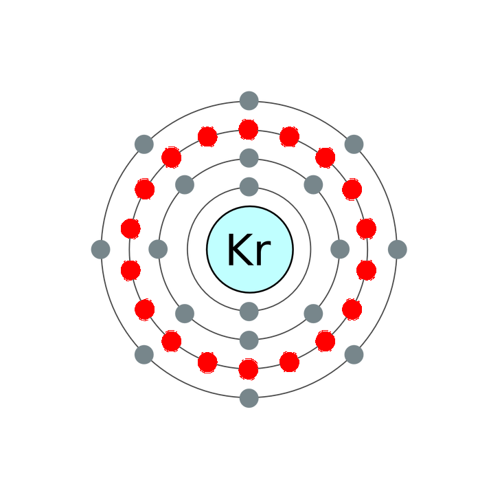

Krypton's white discharge is sometimes used as an artistic effect in gas discharge "neon" tubes. Krypton produces much higher light power than neon in the red spectral line region, and for this reason, red lasers for high-power laser light-shows are often krypton lasers with mirrors that select the red spectral line for laser amplification and emission, rather than the more familiar helium-neon variety, which could not achieve the same multi-watt outputs.
The next most inner shell of krypton contains eighteen electrons.